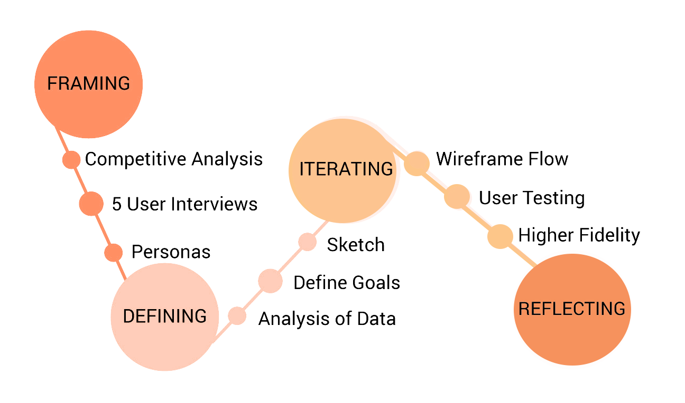
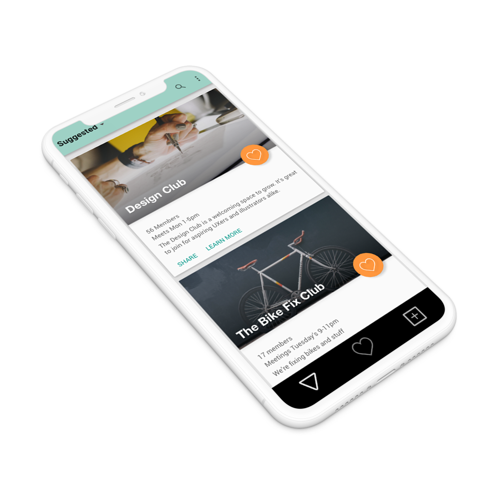

Challenge:
Design an experience for new students to browse, search, and propose new student organizations.
Roles
User Interface Designer
User Experience Designer
User Experience Researcher
Timeline
January 2019
Entering University is an incredibly exciting whirwind for new students. However, it’s difficult to get accustomed to the information overload one will face when entering a new environment. As a student myself, I remember having a particularly difficult time with information on clubs and events when at orientation during my freshman year at undergrad.
As a data-driven believer, all of my design decisions in this project are based on data gathered from a competitive analysis of other online student organization hubs as well as user interviews.
My process in creation of this experience happened in 4 main steps: Framing, Defining, Iterating and Reflecting.

Competitive Analysis
I started out my design challenge as if it were any other design project, trying to understand what I didn’t know. Context is critical in designing a user centered product, so I started out looking at how information is dispersed and displayed in the current student organization ecosystem at 3 separate universities, UMICH, UWASH, and UMASS.
I jotted down important features of these systems and took note of what I thought was useful information, feature presentation, and content.
User Interviews
I needed to learn more about users. I interviewed two groups of people who would directly interact with the experience I was looking to create. I interviewed 4 students as the main users. Additionally, I went to the Academic Affairs Office and interviewed the Coordinator who is the first point of contact in club proposals. The University of Michigan has over 1,600 clubs and groups to join so I needed to know what information is critical in their process, and what could be improved upon.
What did I learn?
In my discussion with student affairs, I discovered:
In my discussion with students, I discovered:
Persona Creations
I considered several approaches including participatory design, reflective design and value sensitive design. Since my design solution will intend to forge a sense of community and welcoming atmosphere, creating personas felt necessary for a value sensitive solution.
Jotting down persona goals and traits helped guide my design and user journey through the app. This was more of a personal step, but very important in considering value sensitivity.
Design Priority Matrix
Before coming up with possible solutions, I needed to synthesize and define goal priority for what to incorporate into the final design which I did in the matrix below.
The priority matrix is an analytical way for me to make decisions. Based on user interviews, I put those goals into the matrix and weighted them from 1-5 on importance(1-5: nice to have - must have) and severity (1-5: annoyance - critical problem) and multiplied to find priority.
Sketching
My overarching goal was to make learning about and suggesting student organizations as intuitive as possible in this design process.
I set out to achieve my goal with 3 sub-goals defined by my matrix
Once I defined my direction and goals, I started sketching my critical screens to map out the general user flow. I attempted to add in all of the features that I wanted and it felt rough, but logical once sketched.
Wireframe Flow
After working out the flow with my sketches, I created a more detailed digital version, the wireframe:
I worked out the three most important features in the app. They are Suggested browsing, Favoriting, and Proposing a new organization. I designed the main interface of the app so the user gets closer to his/her goal and logically moving through from left to right.
Welcome Flow
The welcome sequence allows for an opt-out questionnaire where users can browse if they’re not interested in curation. They will get a screen on their suggested tab that will urge them to complete the quiz.
When the user moves through the selections, they will encounter categories of interest that were discovered during my competitive analysis phase. Once complete the user will face a suggestion feed where they have the additional capability of searching all clubs from the dropdown. Each of the three tabs in the main app interface represent a different cycle in the users progress in discovering their best fit for an organization.
Formation Flow
The formation tab is an aspect of the application where students can propose their own clubs and organizations. I used the information gathered from my interview with the Office of Academic Affairs to create a flow. Every school will have different requirements as discovered in my competitive analysis.
Once through the steps, the student can submit. After submission, the application status will be updated through the approval process.
In the suggested discovery tab, users can like their favorite groups and then open up each information card to learn more. I have implemented three different Google products to enhance the user’s experience within the information card.
The first is a contact card where the user can email the owner of that organization. Secondly the user can add the up to date meeting time to their Google calendar which is a great way for a new student to plan out their orientation week. Third when a user clicks on the address of the meeting place, they can open up Google Maps to navigate them to their meeting. Many interviewed students expressed how they felt lost in their new environment during their orientation; mapping meeting places will ease anxiety.
The favorites tab collects organizations that are ‘heart-ed’ or liked in the discovery tab. They can again view the same information but now without having to run through all of the organizations on the news feed.
I wish that I had more time to design a backend form reception web portal. I knew that was beyond the scope of this challenge, but after hearing about the different user needs from the backend (Office of Student affairs) and the main student user base, the format of the app really needs both a web portal for reviewing forms, and updating information in addition to the submissions and browsing by students.
